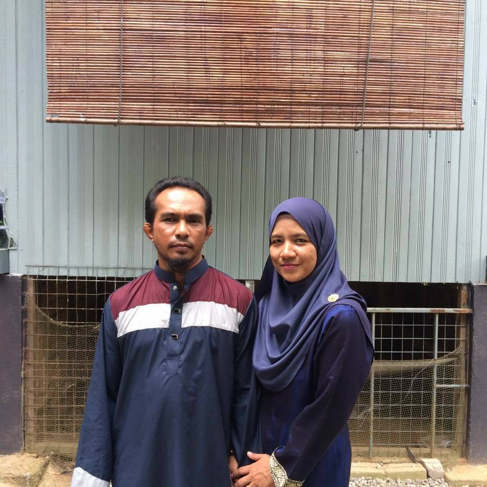
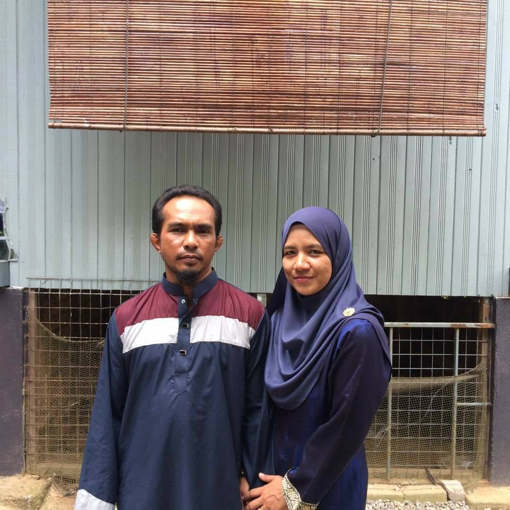
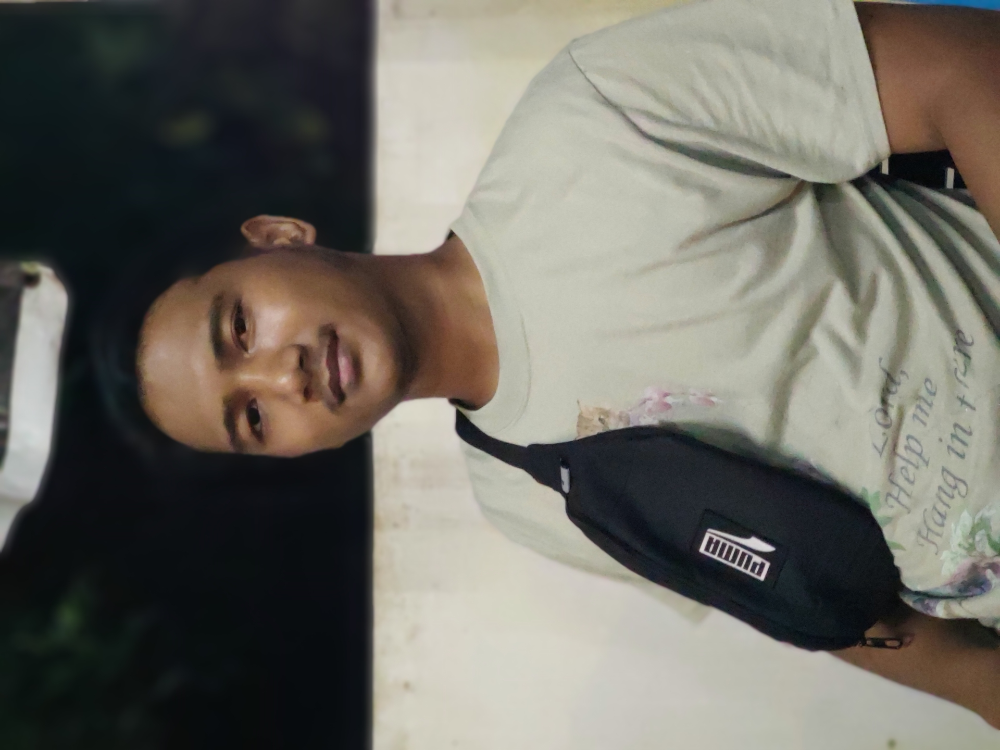
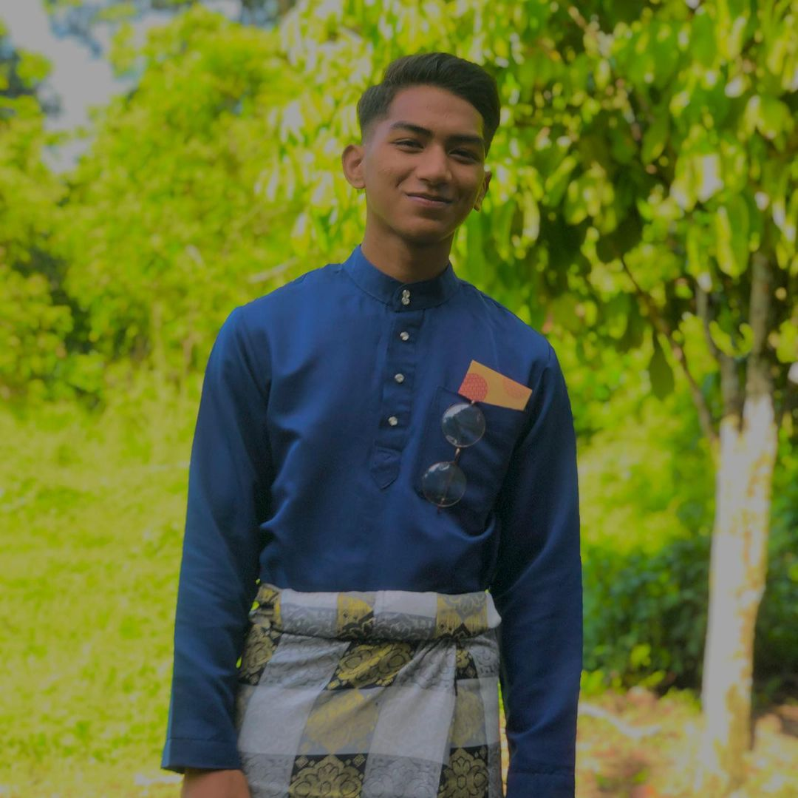
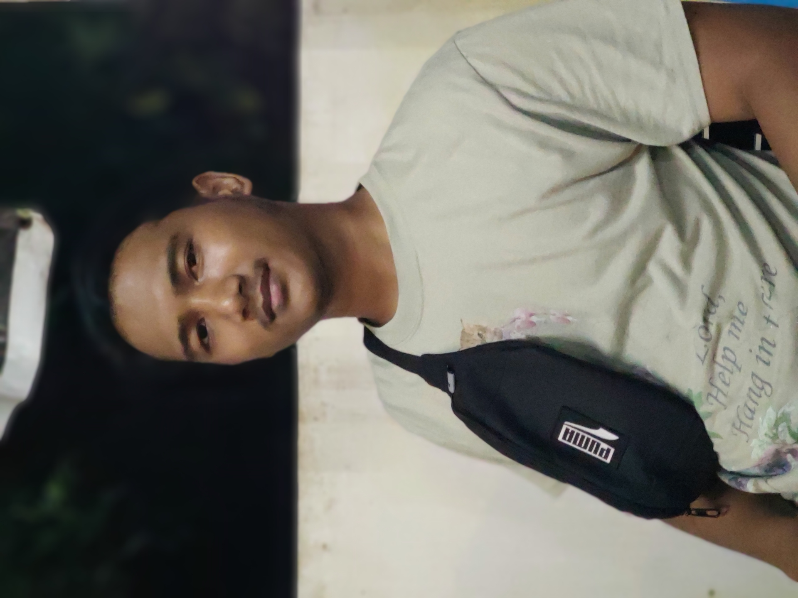
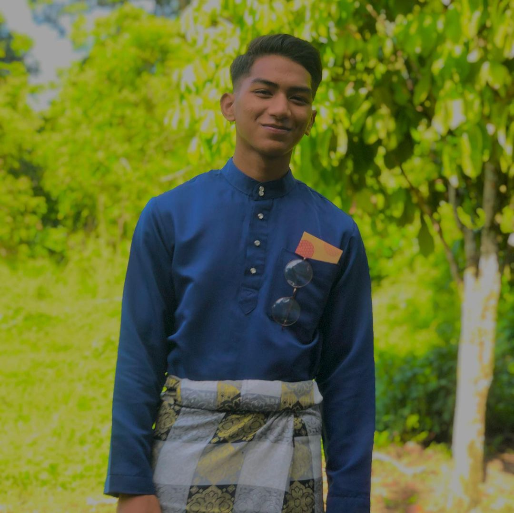

The Six of Us
There are a total of 6 family members in my family. This family consist of 4 siblings
including me where I am the most handsome one. I have a beautiful and caring mother
who take care of me and my supportive yet strict father. This family is all I have
eventhough all we do is annoy each other but there is nothing thicker than blood.
Mother and Father
This is the picture of my Mother and Father. My mother's name is Suhana binti Hassan.
She works as a teacher in SK Bendang Nyior, Tanah Merah, Kelantan. She is a beautiful,
kind, caring and lovely mother. My father's name is Wan Roslan bin Wan Mohd Nawai.
He is a former Navy Soldier and currently working as a labor. He will go to work when there are calling from the villagers. He is a handsome, kind, and funny person. I love both
of my parents very much.
Older Brother
This is the picture of the first born child in my family. His name is Wan Muhammad Faris Aidil.
He is 23 years old and now furthering his study in Bachelor in English with Communication (Honours).
He is a funny person but he can be strict sometimes due to his responsibility as the eldest child
in the family.
Second Child of The Family
The second child of the family named Wan Muhammad Faisal. He is 22 years old. He is now working
in 7 Eleven Tanah Merah. He is the most short-tempered among the siblings. Even he had
short-tempered issue, I love to annoy him the most.
The Youngest Child of The Family
This is my younger brother. His name is Wan Muhammad Farid. He is currently 19 years old.
He is the most spoiled child in this family. Even he is my younger brother, I can see he worked
hard to earn pocket money. He helps my father works at the village while waiting for the Navy's
interview.

 

 


